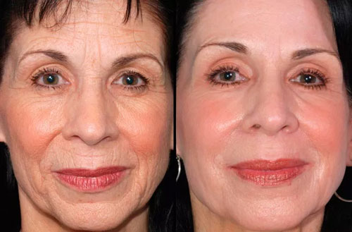

Resulta que el "secreto" gracias al cual las estrellas se ven como adolscentes es conocido por todos. Consiste en un estilo de vida saludable y los productos de cuidado adecuados. La primera es más o menos clara por eso nos concentraremos en los productos especiales.
No todas las figuras públicas son partidarias de las cirugías. Por lo general ellas utilizan la cósmetica antiedad más moderna. Hoy descubriremos que producto prefieren utilizar las estrellas este año.
En 2019 salió a la luz un complejo bioactivo rejuvenecedor bajo el nombre de Hialuronika. En particular las primeras personas en probar esta herramienta fueron bellezas de una edad no muy avanzada a pesar de que este producto contiene poderosas propiedades antiedad.
Reese Witherspoon, 41 años

¡Reese Witherspoon tiene 41 años y se ve increíble! La eternamente joven actriz se diferencia poco de su personaje en "Legalmente rubias" y desde el estreno de la película ya han pasado (¡Atención!) 16 años.
“Al principio tenía muchas dudas de que la cósmetica me ayudaría a eliminar las arrugas. Pero en verdad lo hizo. ¿¡Desde entonces no comprendo porque no ha causado mucho ruido en todas las redes sociales!? Este es un gran avance en el ámbito de la cosmetología. El efecto es simplemente impresionante, en una sola aplicación, es como si hubiera perdido unos 7 años en un instante. Ahora continúo usando Hialuronika desde hace 3 meses y nadie me puede reconocer!”
Miranda Kerr, 34 años

Miranda Kerr tiene 34 años pero su adorable rostro de "niña" con labios regordetes, grandes ojos y hoyelos en las mejillas le permite quedarse como una de las modelos con más demanda en el mundo.
"Gracias a la emulsión Hialuronika vivir se ha vuelto más fácil. Se puede olvidar de los diversos procedimientos costosos al igual que otros productos para el cuidado de la piel (por supuesto, aún utilizo crema para manos). ¡Se la recomiendo a todas las chicas! ¡Uno debe pensar en su belleza desde una temprana edad!" Mencionó la supermodelo
Shakira, 43 años

Shakira alcanzó su pico de popularidad entre los años 2005-2010. Los éxitos "La tortura", "Hips Don't Lie" y "Loca" se escuchaban en todos lados y las chicas se sabían de memoria todas sus canciones. Han pasado los años, la cantante parece ser que ha tomado un descanso, se habla menos sobre ella, pero no ha cambiado nada, como si hubiera sido congelada. Shakira ya no tiene 27 años, pero simplemente mira como se ve.
En general Shakira para el cuidado de su piel utiliza exclusivamente una emulsión activa Hialuronika y en muy raras ocasiones, maquillaje de pestañas. En todo el tiempo de publicación de la revista PopStar, ninguna de las cantantes se ha conseguido ver así a sus 43 años.
Marion Cotillard, 43 años

Marion Cotillard tiene una apariencia de ángel. Una amplia sonrisa, mirada abierta, delicada figura y un lindo rostro le permite a la actriz ser pretendiente para el papel de una chica de 16 años en cualquier película.
“Ahora en mi arsenal apareció la emulsión Hialuronika un remedio natural y efectivo. De una maravillosa manera lidia con todos los problemas del rostro relacionados con la edad. Hialuronika se ha convertido en mi varita mágica. Decidí que era hora de comenzar ya que empecé a notar algunas arrugas y no podía tolerar eso. Después de dos aplicaciones de Hialuronika todo desapareció!” — Dice Marion.
Keira Knightley, 34 años

La rubia delgada con una encantadora sonrisa y un aspecto brillante parece ser considerablemente más joven. Al ver a la cantante es imposible pensar que ella tenga 35 años.
Hace poco la actriz celebró su cumpleaños número 35, pero parece ser 10 años más joven. Por mucho que la genética sea benevolente, la cantante cree que el principal secreto es un cuidado adecuado de la piel.
“Un mínimo de cosmética decorativa y un máximo de naturalidad, ese es mi consejo”, Dice Keira. Actualmente en mi cosmetiquera se encuenta únicamente un rímel y la emulsión Hialuronika de acuerdo con las palabras de la cantante, el producto más confiable.
Emulsión bioactiva de rápido acción Hialuronika ya ha recopilado una gran cantidad de comentarios en Internet. También se han encontrado compradores descontentos. Al parecer los estafadores rápidamente han capturado la tendencia y han lanzado la fabricación de productos falsos.
El producto original de Hialuronika se puede adquirir exclusivamente en el sitio oficial del fabricante Todos los demás puntos de distribución son falsificaciones.

Ten cuidado en el camino hacia una piel perfecta. Especialmente para nuestros lectores hemos dejado la dirección web del sitio del fabricante para evitar que compres una falsificación de Hialuronika.

con descuento ahora mismo!